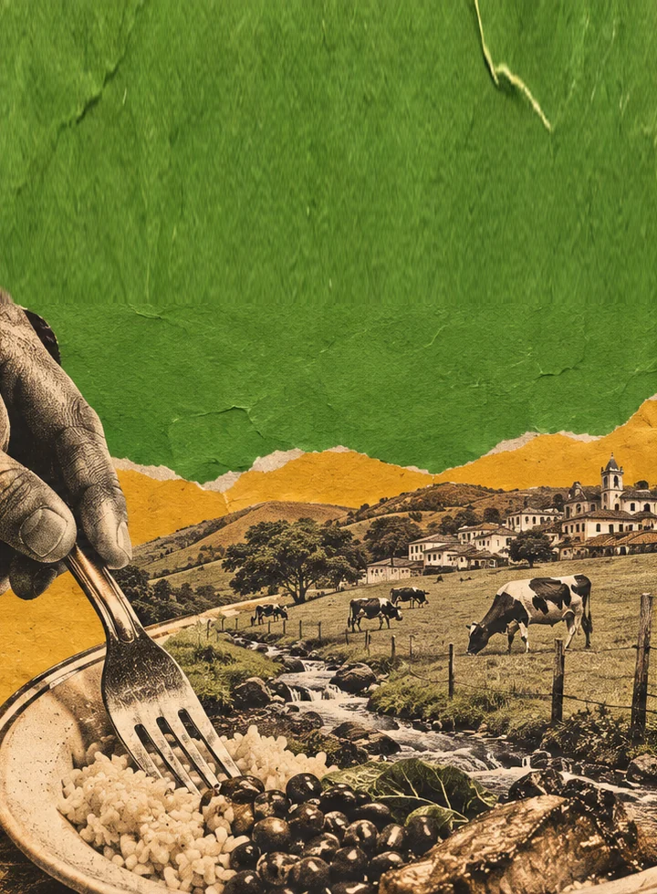

Comer carne destrói o planeta? O agro, o boi e o seu prato
6 pratos · 12 minutos · grátis
Começar o curso →Depende do que vai no prato e de como foi produzido. Na média mundial, produzir 100 g de proteína de boi de corte emite 49,9 kg de gás carbônico equivalente; de frango, 5,7; de feijão e outras leguminosas, 0,84, segundo dados de Poore e Nemecek reunidos pelo Our World in Data. Os 10% de produtores de boi de menor impacto ficam abaixo de 9. No Brasil, a agropecuária emitiu 626 milhões de toneladas de gás carbônico equivalente em 2025, segundo o SEEG, e o desmatamento na Amazônia caiu para o menor nível desde 1988.
Ou vá direto na dúvida
6 pratosPRATO 1Qual mistura do PF emite mais?
Na média mundial, por 100 g de proteína: boi de corte 49,9 kg de gás carbônico equivalente, queijo 10,8, porco 7,6, frango 5,7, ovo 4,2, tofu 2,0 e feijão e outras leguminosas 0,84, segundo o Our World in Data, com dados de Poore e Nemecek (2018).
PRATO 2Todo boi emite igual?
Não. No mundo, metade da carne de boi emite mais de 25 e metade menos (a mediana); os 10% de produtores de menor impacto ficam abaixo de 9. A Embrapa tem um protocolo voluntário de Carne Baixo Carbono. Para o Our World in Data, comer menos carne é quase sempre melhor que buscar a carne mais sustentável.
PRATO 3De onde vêm os gases de efeito estufa do Brasil?
Em 2025, as emissões brutas foram de 2,06 bilhões de toneladas: 814 milhões do desmatamento e uso da terra, 626 milhões da agropecuária e 427 milhões da energia, segundo o SEEG. Entre agosto de 2025 e julho de 2026, o desmatamento na Amazônia foi de 3.335 km², o menor desde 1988.
PRATO 4Quanto o agro pesa na economia?
Depende da régua: contando a cadeia inteira, 25,13% do PIB em 2025, segundo o Cepea; só dentro da porteira, cerca de 6,1%, segundo o IBGE. O agronegócio ocupou 28,4 milhões de pessoas e exportou US$ 169,2 bilhões em 2025.
PRATO 5Quantos brasileiros são vegetarianos?
As pesquisas variam: 14% se reconheciam vegetarianos no Ibope de 2018, feito para a Sociedade Vegetariana Brasileira; 7% concordaram, total ou em parte, que são veganos no Datafolha de 2025, também encomendado por ela; 13% não comem carne e 55% comem de tudo, segundo a Ipsos para o EscolhaVeg, da ONG Mercy For Animals, em 2023.
PRATO 6Carne faz mal? Sem carne falta nutriente?
A OMS classifica carnes processadas como causa de câncer colorretal e a carne vermelha como causa provável; a carne também é fonte de proteína, B12, ferro e zinco, segundo a Embrapa. Dietas vegetarianas e veganas bem planejadas são consideradas saudáveis pela Academia de Nutrição e Dietética dos EUA, e veganos precisam de B12 em suplemento ou alimento fortificado.
Os dois lados, com o mesmo espaço
Os números por comida são médias e medianas mundiais, não do Brasil, e cada fazenda pode ficar acima ou abaixo delas. Sobre saúde, a palavra que mais aparece nos estudos é "bem planejada".
Para ir além
leituras dos dois lados- Comer Animais, de Jonathan Safran Foer: critica a pecuária industrial e defende comer menos carne ou nenhuma
- O Dilema do Onívoro, de Michael Pollan: segue quatro refeições, do fast-food à caça, e se mostra mais simpático à carne criada a pasto, embora admita que é difícil produzi-la em grande escala
Fontes
27 fontes- Our World in Data, com a maior meta-análise já feita sobre impactos da comida (Poore e Nemecek, 2018: 570 estudos, cerca de 38.700 fazendas em 119 países, ano de referência mediano 2010): médias mundiais de emissões, em kg de CO2 equivalente por 100 g de proteína: boi de corte 49,9, queijo 10,8, porco 7,6, frango 5,7, ovo 4,2, tofu 2,0, feijão e outras leguminosas 0,84 · abrir ↗
- Embrapa, Valor Nutritivo da Carne (2003): a carne é uma excelente fonte de proteínas em quantidade e qualidade; 100 g de coxão mole magro cozido contêm cerca de 30 g de proteína; também é fonte de vitaminas do complexo B (principalmente B12), ferro e zinco · abrir ↗
- Guia Alimentar para a População Brasileira (Ministério da Saúde, 2ª ed., 2014): recomenda preferir alimentos in natura ou minimamente processados; a mistura de arroz com feijão aparece em quase todos os almoços e na grande maioria dos jantares dos exemplos, que incluem carnes, com as vermelhas restritas a um terço das refeições apresentadas · abrir ↗
- Our World in Data (Hannah Ritchie, fev/2020), com dados de Poore e Nemecek (Science, 2018): a carne de boi tem mediana mundial de 25 kg de CO2 equivalente por 100 g de proteína (metade emite mais, metade menos), e os 10% de produtores de menor impacto emitem menos de 9; entre os vegetais, os 10% de maior impacto chegam a 3,5 no tofu, 2,4 nas castanhas e 0,8 na ervilha; frango dos 10% de menor impacto, 2,4. Conclusão do texto: comer menos carne é quase sempre melhor do que comer carne mais sustentável · abrir ↗
- Revista Pesquisa Fapesp (abr/2022): quanto menor o tempo de vida do boi, mais baixa a emissão por quilo de carne; a integração da lavoura com a pecuária foi sistematizada pela Embrapa nos anos 1990, e as raízes do capim estocam carbono no solo; uma fazenda com integração citada pela revista emitia 11,5 t de CO2 equivalente por tonelada de carne, cerca de 40% abaixo da média mundial, valor que a revista ainda considera alto · abrir ↗
- Embrapa (2025): o Protocolo Carne Baixo Carbono, de adesão voluntária, pretende valorizar a carne de sistemas capazes de mitigar as emissões do gado de corte, com práticas em pastagens, terminação intensiva e integração lavoura-pecuária, em linha com o Plano ABC+ do Ministério da Agricultura · abrir ↗
- Canal Rural (out/2026), com dados do SEEG: as emissões brutas do Brasil somaram 2,06 bilhões de toneladas de CO2 equivalente em 2025, queda de 6%; mudança de uso da terra (sobretudo desmatamento) 814 milhões de toneladas, queda de 15%; agropecuária 626 milhões, queda de 0,1%; energia 427 milhões, alta de 1,2%; resíduos 96 milhões; processos industriais 94 milhões · abrir ↗
- Forbes Agro (21/out/2026), com dados do Imaflora para o SEEG: a agropecuária emitiu 626,3 milhões de toneladas de CO2 equivalente em 2025; a pecuária caiu 1,68%, para 494,1 milhões, e a agricultura somou 132,1 milhões; o gado de corte respondeu por 410,7 milhões, 65,6% do total; no mesmo ano, a produção de carcaças bovinas avançou 7,2% · abrir ↗
- SEEG, relatório analítico 13 (dados de 2024): somando as emissões diretas do setor e o desmatamento, a atividade agropecuária responde por dois terços das emissões brutas do país; a pecuária sozinha responde por 51% · abrir ↗
- Canal Rural (out/2026), com dados do Prodes/Inpe divulgados pelo governo federal: o desmatamento na Amazônia somou 3.335 km² entre agosto de 2025 e julho de 2026, queda de 41,8%, a menor taxa da série iniciada em 1988; no Cerrado, 5.516,69 km², queda de 23,8%, a menor da série iniciada em 2001 · abrir ↗
- CNA (4/mai/2026), com o Cepea/USP: o PIB do agronegócio cresceu 12,2% em 2025, e a participação do setor na economia subiu de 22,9% em 2024 para 25,13%. O conceito soma insumos, produção, agroindústria e serviços ligados ao agro · abrir ↗
- CNN Brasil (2026), com dados do IBGE: o PIB da agropecuária, que mede a produção dentro da fazenda, somou R$ 775,3 bilhões em 2025, o que correspondeu a aproximadamente 6,1% do PIB · abrir ↗
- Agrolink (mai/2026), com Cepea e CNA: o agronegócio teve 28,4 milhões de pessoas ocupadas em 2025, recorde, alta de 2,2%; o setor respondeu por 26,3% dos empregos do país · abrir ↗
- Band (2026), com o Ministério da Agricultura: em 2025, as exportações do agronegócio somaram US$ 169,2 bilhões, 48,5% do total das vendas externas do Brasil · abrir ↗
- CNN Brasil (2022): pesquisa do Ibope de 2018 apontou que 14% dos brasileiros (cerca de 30 milhões de pessoas à época) se reconheciam vegetarianos · abrir ↗
- Tribuna de Jundiaí: o dado de 14% de vegetarianos (30 milhões de brasileiros) vem de pesquisa da Sociedade Vegetariana Brasileira (SVB), alta de 75% sobre 2012, quando a proporção era de 8% · abrir ↗
- Sociedade Vegetariana Brasileira (21/mar/2025), sobre pesquisa Datafolha encomendada por ela: 7% da população (cerca de 15 milhões) concorda, total ou parcialmente, que é vegana; a SVB diz que a metodologia mediu o senso de identidade, não detalhes do que cada pessoa come · abrir ↗
- Ipsos (16/mai/2023), para o programa EscolhaVeg, da ONG Mercy For Animals (1.001 entrevistas on-line): 55% dos brasileiros têm alimentação onívora, 22% flexitariana, 8% vegetariana estrita ou vegana, 7% pescetariana e 5% ovolactovegetariana · abrir ↗
- O Povo (mar/2025), sobre a pesquisa Datafolha encomendada pela SVB: 74% da população concorda, em algum grau, com a possibilidade de parar de consumir carne pela própria saúde, e 22% afirmam já ter tentado parar de comer carne em algum momento · abrir ↗
- Notícias Agrícolas (6/mai/2026), com o Relatório Anual da Associação Brasileira de Proteína Animal: o consumo de frango no Brasil alcançou 46,7 kg por habitante em 2025 · abrir ↗
- Itatiaia (2026), com dados da Conab: a oferta de carne bovina por habitante deve cair de 34,6 kg por ano em 2026 para 31,9 kg em 2027; segundo a Conab, a carne bovina perdeu espaço no orçamento das famílias de menor renda para proteínas mais acessíveis, como frango e porco · abrir ↗
- Instituto Nacional de Câncer (INCA), sobre o relatório da Agência Internacional de Pesquisa em Câncer (Iarc), da OMS, de outubro de 2015: carnes processadas, como salsicha, linguiça, bacon e presunto, foram classificadas no grupo 1 (evidência suficiente de que causam câncer colorretal); cada porção diária de 50 g aumenta esse risco em 18%; a carne vermelha entrou no grupo 2A, de carcinógeno provável · abrir ↗
- Observador (2015), citando Kurt Straif, diretor do programa de monografias da Iarc: para um indivíduo, o risco de câncer colorretal pelo consumo de carne processada continua pequeno, mas aumenta com a quantidade consumida; o jornal acrescenta que estar no mesmo grupo do tabaco não quer dizer que o risco seja equivalente · abrir ↗
- Academia de Nutrição e Dietética dos EUA (2016): dietas vegetarianas, incluindo veganas, bem planejadas são saudáveis, nutricionalmente adequadas e podem trazer benefícios para prevenir e tratar certas doenças; veganos precisam de fontes confiáveis de vitamina B12, como alimentos fortificados ou suplementos · abrir ↗
- Idec (set/2026): o Guia Alimentar para a População Brasileira, do Ministério da Saúde, recomenda que alimentos in natura ou minimamente processados, em grande variedade e predominantemente de origem vegetal, sejam a base da alimentação · abrir ↗
- O Povo (8/fev/2025), sobre estudo da USP liderado por Hamilton Roschel e publicado no Jama Network Open, com 774 veganos: eles consumiam menos ultraprocessados que a média da população; os mais comuns eram proteína texturizada de soja e suplementos proteicos vegetais, que ajudavam a atingir a meta de proteína · abrir ↗
- eCycle (10/abr/2026), reproduzindo texto de Joyce Pezzato para o Jornal da USP: a nutricionista Ana Rita Nobre, doutoranda da USP de Ribeirão Preto, diz que o acompanhamento profissional é fundamental para evitar carências e que a dieta pode não ser viável para parte da população por causa do custo de alimentos fortificados, suplementos e acompanhamento · abrir ↗